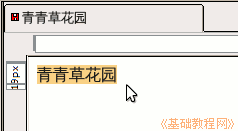
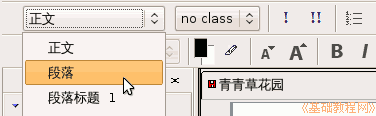
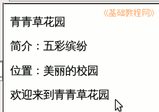
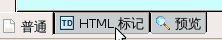
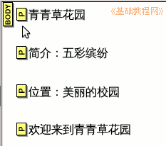
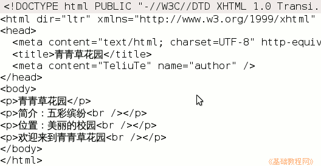
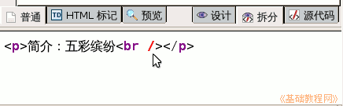

KompoZer 操作基础教程
作者：Teliute 来源：基础教程网
二、段落和标签 返回目录 下一课网页的内容大部分是文字，给文字分段是一个较好的习惯，下面我们来看一个练习；
1、启动KompoZer
1）点左上角菜单“应用程序－编程－KompoZer”，就可以启动KompoZer程序；
2）点菜单“格式－页面标题和属性”，把标题改为“青青草主页”，再点“文件－保存”命令，找到qqc文件夹，保存文件名为 index.html
2、设置文字
1）输入文字“青青草花园”，然后用拖动鼠标的方法选中这一行文字；

2）然后点击左上角的“正文”下拉列表，选择“段落”，将这一行设为一个段落，然后在“花园”后面点一下，取消选择；

3）然后按一下回车键，继续输入第二行，输入“简介：五彩缤纷”，
按回车键到下一行，这时候都是一段一段的了，输入“位置：美丽的校园”；

4）保存一下文件，点“浏览”按钮查看一下网页效果；
5）回到窗口，在下边找到一排标签，点击第二个标签“HTML 标记”，

可以看到每一行前面都有一个“P”，这就是段落的标记，表示这一行是一个自然段；

6）再点击右边的“源代码”标签，这里面显示的是整个文件的代码，开头部分是各个html标记，标题，作者等，

7）点击“拆分”标签，再点下边的代码窗口，删除多余的<br /> 标记；

点击“设计”和“普通”标签，重新回到编辑模式，
本节学习了段落设置和标签切换的基本方法，如果你成功地完成了练习，请继续学习下一课内容；
本教程由86团学校TeliuTe制作|著作权所有
基础教程网：http://teliute.org/
美丽的校园……
转载和引用本站内容，请保留版权信息和本站链接。